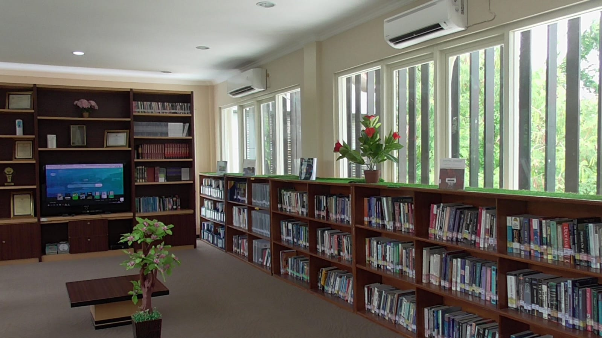

Fasilitas

Plaza Selatan adalah area yang dirancang sebagai ruang interaksi dan berbagi informasi bagi warga Informatika. Di sini, terdapat mading yang menampilkan berbagai informasi terkini, serta beberapa Tugas Akhir (TA) dari mahasiswa yang dipamerkan untuk memberikan inspirasi dan referensi. Selain itu, fasilitas lounge yang nyaman juga tersedia, memberikan tempat bagi mahasiswa untuk bersantai, berdiskusi, atau bekerja secara kolaboratif. Ruang ini menjadi titik pusat bagi komunitas Informatika untuk berkumpul, berbagi ide, dan menikmati suasana yang mendukung kegiatan akademik maupun sosial.